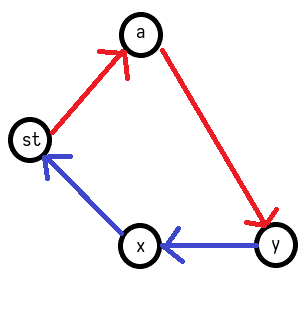
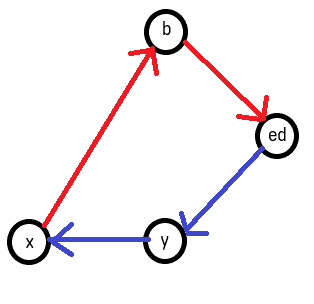
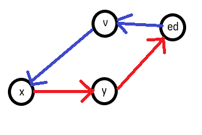
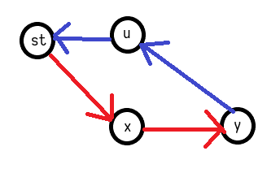
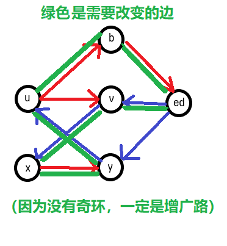
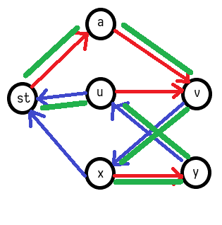

二分图
顶点可以分类两个集合X和Y，所有的边关联的两个顶点，恰好一个属于集合X，另一个属于集合Y
二分图增广路的另一种理解：
建立一个有向图，非匹配边看做从左向右，匹配边看做从右向左
那么左边的x到右边的y存在增广路，相当于存在一条路径，非常方便
杂七杂八
在平面二分图上，如果存在使边不会重叠的方案，那么其中一定有一种是边长和最小的方案
也就是把合法性、可行性问题转化为求边长和最小的问题
证明的话，显然如果我能够选择不跨越，边长和会变小
König定理
最大 匹配数:顶点两两配对的对数
最大 独立集:顶点两两不到达的点数
最小 点覆盖:选一个点就能覆盖所有与它连接的边，求点覆盖所有边的点数
最小 边覆盖:选一条边就能覆盖所有与它连接的点，求边覆盖所有点的边数
- 最小点覆盖（有时称为最小覆盖）=最大匹配数
- 最小边覆盖=最大独立集
- 最大独立集=去掉最少的点，剩下点之间没有边=n-最小点覆盖=n-匹配数
最小点覆盖
自信地说，截至2018.11，没有看到更完善的证明
感觉近几年没人研究这东西了……都是远古资料
对二分图先进行最大匹配，建议画图理解
设匹配数为m，点覆盖集合为S
构造方法：
每次从右边的非匹配点出发，找出所有「未匹配边->匹配边->…未匹配边->匹配边」的路径，经过的点打上标记
则最小点覆盖方案为「A左边有标记」+「B右边没标记」
证明：
一、合法性
①标记->标记，可以用A覆盖
②标记->无标记，可以用A覆盖
③无标记->无标记，可以用B覆盖
④无标记->标记，不存在
对于④，如果边是匹配边，则右边的标记来自左边，变成①；
如果是非匹配边，标记来自其他匹配点，将继续打标记，变成①
二、最小性
首先显然 $|S| \geq m$
起点贡献为 $right-m$
然后每次打标记，显然左标记一定会贡献一个且仅一个右标记
所以 $右标记=左标记+right-m$
$右非标记=m-左标记$
$|S|=m$
实现：
网络流是最容易实现的
匹配边总是向左，非匹配边总是向右，只走「流量=0」的边即可
可以直接在上面搜索
如何保证总是以匹配边结束?
问出这个问题证明你对二分图匹配不熟练，请自行学习
答：如果以非匹配边结束，意味着增广路！
二分图最大匹配的必经边和可行边
先从特殊的完备匹配开始考虑
可以先任意找到一组匹配方案
必经边：「当前是匹配边」并且「删除后不存在从x到y的路径」
因为匹配边意味着从y到x，现在又存在从x到y的路径
那么就以为着 x和y属于同一个强连通分量
所以必经边的判定条件可以改为：「当前是匹配边」并且「不同强连通分量中」
可行边：「当前是匹配边」或者「把x到y看做可行边后，存在连接原本另外两个匹配点的路径」
因为我们刚才的建边方式，也就是另外两个原本的点之间有路径，同时原本就有匹配边把他们和x、y连接
所以说条件可以改成：「当前是匹配边」或者「同一个强连通分量中」
不过，如果没有完备匹配呢？
对于两种边的第二个条件，不一定非要增广x到y，而可以是到z
所以就会出问题（还傻傻地以为没有问题）
怎么解决呢？接下来的内容很好懂
但是我认为是神仙想出来的东西……太nb了，我也只有帮忙吹水的份
分情况去解决问题
对于必经边的判定，不能只是x到y了，而是不能有任何新增广路
所以我们要判断，删除之后是否存在其他增广路
不过，这个增广路一定是连接x和y中某一个的，否则与此次操作无关，影响了最大匹配的“最大”
如果我们考虑用网络流解决二分图最大匹配问题，
剩下的残余网络能够很清晰地得出具体的有向图方案
因为对于匹配边，流量过去了，那么有效边是其反向弧，
非匹配边则不变，恰好与我们提出的有向图表示法相一致
加入源点和汇点，那么匹配点也能很清晰地表示出来了
然后我们可以用这个图去考虑完善判断条件
图示：
a和b是非匹配点，u和v是匹配边
蓝色是匹配边，红色是非匹配边
然后绿色是在强连通分量中的部分
先解决必经边的判定，也就是断开原本的边，分为x和y去找两种情况


对于可行边的判定，原本是非匹配边
可能x和y中只有一个匹配点，分为x和y去找两种情况


也可能两个都是匹配点


综上所述，可以把原本的方案，判断强连通部分不变，
对象从简单有向图变为网络流的残余网络（忽略流量为0的边）
例题：舞动的夜晚
hall定理
用于判定某个图是否存在完美匹配，证明
设A集合的大小更小，则对于A的所有子集T，都满足连向B的点集大小>=|T|
用过的题：agc037E
最大二分图匹配
（下文为早期所写，不保证正确性）